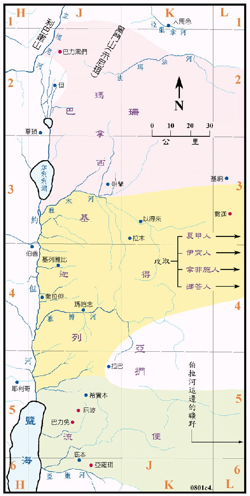

| 圣经 | 说明 |
|---|---|
| 代上5:1-24 | 河东两个半支派。 |
流便支派的地业似无太大的变化。迦得似占据了雅木河以南，原属玛拿西的基列地。而玛拿西似往北扩张到了巴力黑们和黑门山之地，这两个半支派都分别及联合往东发展，征服了夏甲人、伊突人、拿非施人和挪答人，住在他们的地上，直到被掳的时候。
同<王下图06>
| 圣经 | 说明 |
|---|---|
| 代上5:23-26 | 河东两个半支派被掳去亚述。 |
代上6章全部利未人之城邑本章所列利未人城邑之名单，大约与书21 章所列相同，仅有下列各地之地名有异：
| 本章中之名 | 书21章中之名 |
|---|---|
| 希仑 | 何仑 |
| 无 | 淤他 |
| 无 | 基遍 |
| 阿勒篾 | 亚勒们 |
| 约缅 | 基伯先 |
| 亚斯他录 | 比施提拉 |
| 基低斯 | 基善 |
| 拉末 | 耶末 |
| 亚珊 | 亚因 |
| 亚年 | 隐干宁 |
| 玛沙 | 米沙勒 |
| 户割 | 黑甲 |
| 哈们 | 哈末多珥 |
| 基列亭 | 加珥坦 |
| 亚乃 | 他纳 |
| 临摩挪 | 丁拿 |
| 比连 | 迦特临门 |
| 他泊 | 无 |
| 雅哈撒 | 雅杂 |
| 拿哈拉 | 无 |